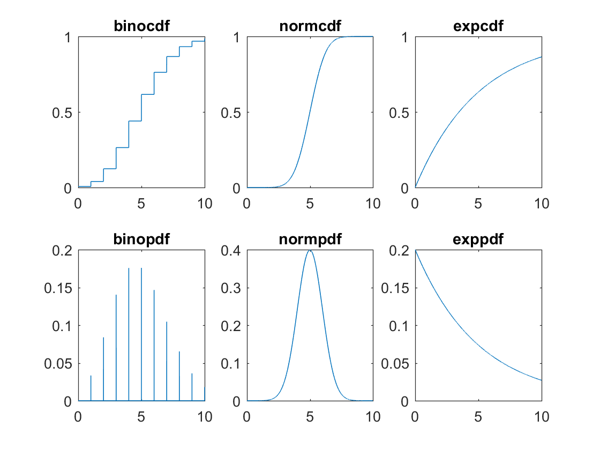

Contents
Laboration 0
Förberedande labtillfälle
%Skräpkod Upg 0 - 5 clear, clc a = 1; b = sqrt(36); width = 3.89; w = rand(4 , 1); % exp log sin asin cos acos tan atan %x = 0.5:0.1:2; %y = log(x); %plot(x,y) n = 1000; ev = 1; y = exprnd(ev, n, 1); u = mean(y); disp(['Medelvärdet av x är: ' num2str(u)]); y1 = sort(y); x1 = (1:1:n)'; %{ hold on, clf(1), figure(1) plot(x1,y1, 'g'); line(x1, ones(length(x1),1)*u); hold off %} min = 0.7; xbool = y>min; mxb = mean(xbool); disp(['Svanssannolikheten att värdet är större än ' num2str(min) ' är beräknad till ' num2str(mxb)])
Medelvärdet av x är: 1.001 Svanssannolikheten att värdet är större än 0.7 är beräknad till 0.48
Beräkning av Sannolikheter
binocdf, binopdf, normcdf, normpdf, expcdf, exppdf
clear, clc MU = 5; N = 1000; P = MU/N; SIGMA = 1; LB = 0; UB = 10;
binocdf
Kumulativ sannolikhetstäthet (sannolikheten) för x > 0, föredelad kring x = N * P givet N försök och sannolikheten P diskret fördelade för x > 0 som tillhör de naturliga talen.
x1 = LB:1/N:UB; y1 = binocdf(x1,N,P);
binopdf
Sannolikhetstäteten kring x = N * P givet N försök och sannolikheten P diskret fördelade för x > 0 som tillhör de naturliga talen.
x2 = 1/N:1/N:10; y2 = binopdf(x2,N,P);
normcdf
Kumulativ sannolikhetstäthet
x3 = LB:1/N:UB; y3 = normcdf(x3,MU,SIGMA);
normpdf
Sannolikhetstäteten
x4 = LB:1/N:UB; y4 = normpdf(x4,MU,SIGMA);
expcdf
Kumulativ sannolikhetstäthet
x5 = LB:1/N:UB; y5 = expcdf(x5,MU);
exppdf
Sannolikhetstäteten
x6 = LB:1/N:UB; y6 = exppdf(x6,MU);
Subplot
figure(1), clf(1), hold on subplot(2,3,1) plot(x1,y1); title('binocdf') subplot(2,3,4) plot(x2,y2); title('binopdf') subplot(2,3,2) plot(x3,y3); title('normcdf') subplot(2,3,5) plot(x4,y4); title('normpdf') subplot(2,3,3) plot(x5,y5); title('expcdf') subplot(2,3,6) plot(x6,y6); title('exppdf') hold off %%%% End Subplot %%%%